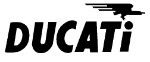
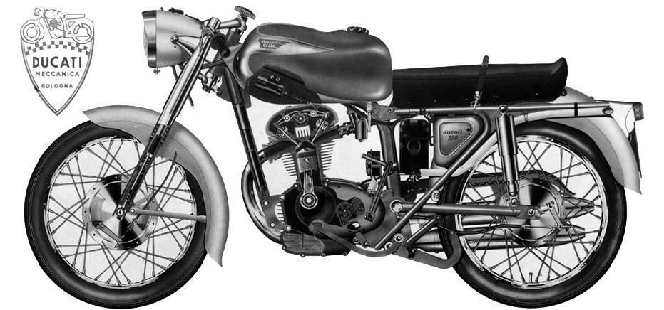

1. Década de los 60.-1.1 125 Sport.- 1.2 125 TS.- 1.3 175 TS.- 1.4 200 Élite.- 1.5 250 Deluxe.- 1.6 160 TS.- 1.7 160 Sport.- 1.8 200 TS.- 1.9 24 Horas.- 1.10 200 V5 (Élite).-
2. Década de los 70.-
2.1 Scrambler.- 2.2 Road.- 2.3 Vento.- 2.4 Forza.- 2.5 Strada.- 2.6 500 Twin.- 2.7 500 Desmo.-
3. Modelos importados y modelos raros.-
3.1 750 SS (modelo importado).- 3.2 Pantah (modelo importado).- 3.3 900 SS.- 3.4 MT 250 4 cilindros .- 3.5 RTS 250 Cross.-
4. Los ciclomotores.-

Año de presentación: 1953
Años de fabricación: 1953-1959
Motor: 4 tiempos, monocilíndrico, refrigerado por aire - diámetro por carrera 49 x 52 mm - cilindrada total 98,06 cc - relación de compresión 8,5:1 - distribución por árbol de levas en el bloque y varillas empujadoras con dos válvulas en culata - engrase con aceite en el cárter a presión y radiador frontal (modelo sport) - carburador Dell´Orto MA 18- embrague multidisco en baño de aceite - cambio de 4 marchas - transmisión primaria por engranajes - transmisión secundaria por cadena.

Parte ciclo: chasis "espina de pescado" en chapa - horquilla delantera telehidráulica - horquilla trasera oscilante con 2 amortiguadores hidráulicos - freno delantero de tambor Ø 158mm - freno trasero de tambor Ø 135mm - neumático delantero de 2,50 x 17" - neumático trasero 2,50 x 17".
Dimensiones: distancia entre ejes (batalla) 1260 mm - peso en seco 78 kg - depósito de combustible 10 litros.
Prestaciones: potencia 6,5 CV a 7800 rpm - velocidad máxima 90 km/h en posición normal - consumo 3 litros/100 km.
Colores: plata y negro, con un fileteado verde para separar ambos colores.
Principales diferencias entre el modelo turismo (TL) y el sport: el modelo sport incorporaba un radiador de aceite, llantas de aluminio, amortiguación hidraúlica, frenos mejorados, manillar deportivo, asiento biplaza, cambio de 4 marchas, mayor relación de compresión y un caracter sport. Hoy en día son escasas las unidades que siguen vivas de estos modelos haciendo difícil su restauración. En Italia son más fáciles de encontrar. VOLVER AL INICIO.
Al igual que ocurre con los modelos de los años 70, pueden existir fallos en las descripciones que aquí se hacen de los modelos, puesto que no existe actualmente casi ninguna información, cuadros de carácterísticas de las motos ni catálogos disponibles, y a veces se resuelven dudas después de haber observado tu mismo las motos, o de preguntar a gente de la época cómo recuerda esto o aquello. Además, el problema de contar con stock de piezas "sobrante" en la fábrica, les llevaba a utilizar piezas de unos modelos para fabricar otros, dando lugar a pequeñas variaciones en el montaje de las motos. Sirva esto de aclaración para todos los que observáis disparidad de criterios al describir las motos.
Año de presentación: 1959
Años de fabricación: 1960-1966
Motor: 4 tiempos, monocilíndrico, refrigerado por aire - diámetro por carrera 55,2 x 55 mm - cilindrada total 124,443 cc - relación de compresión 8:1 - distribución por árbol de levas en cabeza y eje rey con copias cónicas con dos válvulas en culata - engrase con aceite en el cárter con bomba - carburador Dell´Orto UB 20 - embrague multidisco en baño de aceite - cambio de 4 marchas - transmisión primaria por engranajes - transmisión secundaria por cadena.
Parte ciclo: chasis tubular en acero - horquilla delantera telehidráulica - horquilla trasera oscilante con 2 amortiguadores hidráulicos - freno delantero de tambor Ø 180 mm - freno trasero de tambor Ø 160 mm - neumático delantero de 2,50 x 17" - neumático trasero 2,75 x 17".
Dimensiones: distancia entre ejes (batalla) 1320 mm - peso en seco 105 kg - depósito de combustible 18 litros.
Instalación eléctrica: la iluminación es por batería, y ésta obtiene su recuperación por medio de un volante alternador MOTOPLAT, a través del correspondiente rectificador de corriente. La batería TUDOR tipo Acumoto -cargada en seco- (6V, 16 Ah) recargada por medio del volante magnético y a través del rectificador de corriente, alimenta, si el motor está parado, las luces de situación (ciudad y piloto). No es aconsejable circular sin batería para no estropear el rectificador de corriente.
Prestaciones: potencia 10 CV a 8000 rpm - velocidad máxima 110 km/h en posición normal - consumo 3 litros/100 km.
Colores: pintura metalizada plata para el faro, cajas laterales, guardabarros, laterales del depósito y azul para el resto; lleva un fino fileteado amarillo en el depósito y en las cajas laterales. Este modelo llevaba grabado en las tapas derechas del motor el "Made in Italy" que descubría el origen de los primeros motores utilizados para montar las motos en España, ya que no se fabricaban enteramente al principio en Barcelona al no tener la infraestructura necesaria, teniendo que ser importados. VOLVER AL INICIO.
Año de presentación: 1960
Años de fabricación: 1961-1966
Motor: 4 tiempos, monocilíndrico, refrigerado por aire - diámetro por carrera 55,2 x 55 mm - cilindrada total 124,443 cc - relación de compresión 7:1 - distribución por árbol de levas en cabeza y eje rey con copias cónicas con dos válvulas en culata - engrase con aceite en el cárter con bomba - carburador Dell´Orto MA 16- embrague multidisco en baño de aceite - cambio de 4 marchas - transmisión primaria por engranajes - transmisión secundaria por cadena.
Parte ciclo: chasis tubular en acero - horquilla delantera telehidráulica - horquilla trasera oscilante con 2 amortiguadores hidráulicos - freno delantero de tambor Ø 180 mm - freno trasero de tambor Ø 160 mm - neumático delantero de 2,50 x 17" - neumático trasero 2,75 x 17".
Dimensiones: distancia entre ejes (batalla) 1320 mm - peso en seco 105 kg - depósito de combustible 18 litros.
Instalación eléctrica: la iluminación es por batería, y ésta obtiene su recuperación por medio de un volante alternador MOTOPLAT, a través del correspondiente rectificador de corriente. La batería TUDOR tipo Acumoto -cargada en seco- (6V, 16 Ah) recargada por medio del volante magnético y a través del rectificador de corriente, alimenta, si el motor está parado, las luces de situación (ciudad y piloto). No es aconsejable circular sin batería para no estropear el rectificador de corriente.
Prestaciones: potencia 8 CV a 7500 rpm - velocidad máxima 90 km/h en posición normal - consumo 3 litros/100 km.
Colores: pintura metalizada plata para el faro, cajas laterales, guardabarros, laterales del depósito y azul para el resto; lleva un fino fileteado amarillo en el depósito y en las cajas laterales. VOLVER AL INICIO.
Año de presentación: 1960
Años de fabricación: 1961-1967
Motor: 4 tiempos, monocilíndrico, refrigerado por aire - diámetro por carrera 62 x 57,8 mm - cilindrada total 174,500 cc - relación de compresión 7:1 - distribución por árbol de levas en cabeza y eje rey con copias cónicas con dos válvulas en culata - engrase con aceite en el cárter con bomba - carburador Dell´Orto UB 22 o Amal 375/22 - embrague multidisco en baño de aceite - cambio de 4 marchas - transmisión primaria por engranajes - transmisión secundaria por cadena.
Parte ciclo: chasis tubular en acero - horquilla delantera telehidráulica - horquilla trasera oscilante con 2 amortiguadores hidráulicos - freno delantero de tambor Ø 180 mm - freno trasero de tambor Ø 160 mm - neumático delantero de 2,75 x 18" - neumático trasero 2,75 x 18".
Dimensiones: distancia entre ejes (batalla) 1320 mm - peso en seco 110 kg - depósito de combustible 18 litros.
Instalación eléctrica: la iluminación es por batería, y ésta obtiene su recuperación por medio de un volante alternador MOTOPLAT, a través del correspondiente rectificador de corriente. La batería TUDOR tipo Acumoto -cargada en seco- (6V, 16 Ah) recargada por medio del volante magnético y a través del rectificador de corriente, alimenta, si el motor está parado, las luces de situación (ciudad y piloto). No es aconsejable circular sin batería para no estropear el rectificador de corriente.
Prestaciones: potencia 12 CV a 7200 rpm - velocidad máxima 115 km/h en posición normal - consumo 3 litros/100 km.
Colores: pintura metalizada oro viejo para el faro, cajas laterales, guardabarros, laterales del depósito y cereza para el resto; lleva un fino fileteado blanco en el depósito y en las cajas laterales. Conocida como la "Ducati ideal" por su fiabilidad y su cilindrada que le proporcionaban un equilibrio perfecto para su uso utilitario. VOLVER AL INICIO.
Año de presentación: 1960
Años de fabricación: 1961-1967
Motor: 4 tiempos, monocilíndrico, refrigerado por aire - diámetro por carrera 67 x 57,8 mm - cilindrada total 203,783 cc - relación de compresión 8,5:1 - distribución por árbol de levas en cabeza y eje rey con copias cónicas con dos válvulas en culata - engrase con aceite en el cárter con bomba - carburador Dell´Orto UB 24 o Amal 376/25 - embrague multidisco en baño de aceite - cambio de 4 marchas - transmisión primaria por engranajes - transmisión secundaria por cadena.
Parte ciclo: chasis tubular en acero - horquilla delantera telehidráulica - horquilla trasera oscilante con 2 amortiguadores hidráulicos - freno delantero de tambor Ø 180 mm - freno trasero de tambor Ø 160 mm - neumático delantero de 2,75 x 18" - neumático trasero 2,75 x 18".
Dimensiones: distancia entre ejes (batalla) 1320 mm - peso en seco 110 kg - depósito de combustible 22 litros.
Instalación eléctrica: la iluminación es por batería, y ésta obtiene su recuperación por medio de un volante alternador MOTOPLAT, a través del correspondiente rectificador de corriente. La batería TUDOR tipo Acumoto -cargada en seco- (6V, 16 Ah) recargada por medio del volante magnético y a través del rectificador de corriente, alimenta, si el motor está parado, las luces de situación (ciudad y piloto). No es aconsejable circular sin batería para no estropear el rectificador de corriente.
Prestaciones: potencia 18 CV a 7500 rpm - velocidad máxima 140 km/h en posición normal - consumo 3 litros/100 km.
Colores: pintura metalizada cereza para el faro, cajas laterales, guardabarros, laterales del depósito y oro viejo para el resto; lleva un fino fileteado blanco en el depósito y en las cajas laterales. Uno de los más bellos modelos de Ducati, se fabricaba en Italia como 175 Sport, aquí se fabricó con 200 cc siendo muy famosa por su extraño depósito de gasolina, y sus elevadas prestaciones. VOLVER AL INICIO.

Año de presentación: 1962
Años de fabricación: 1963-1972
Motor: 4 tiempos, monocilíndrico, refrigerado por aire - diámetro por carrera 69 x 66 mm - cilindrada total 246,793 cc - relación de compresión 8:1 - distribución por árbol de levas en cabeza y eje rey con copias cónicas con dos válvulas en culata - engrase con aceite en el cárter con bomba - carburador Dell´Orto UB 24 o Amal 376/25 - embrague multidisco en baño de aceite - cambio de 4 marchas - transmisión primaria por engranajes - transmisión secundaria por cadena. Motor desarrollado en España con medidas casi cuadradas, lo que permitía desarrollar un caracter más deportivo al tener más rpm disponibles. A partir de este motor se fabricó el del modelo 24 H.
Parte ciclo: chasis tubular en acero - horquilla delantera telehidráulica - horquilla trasera oscilante con 2 amortiguadores hidráulicos - freno delantero de tambor Ø 180 mm - freno trasero de tambor Ø 160 mm - neumático delantero de 2,75 x 18" - neumático trasero 2,75 x 18".
Dimensiones: distancia entre ejes (batalla) 1320 mm - peso en seco 110 kg - depósito de combustible 18 litros.
Instalación eléctrica: la iluminación es por batería, y ésta obtiene su recuperación por medio de un volante alternador MOTOPLAT, a través del correspondiente rectificador de corriente. La batería TUDOR tipo Acumoto -cargada en seco- (6V, 16 Ah) recargada por medio del volante magnético y a través del rectificador de corriente, alimenta, si el motor está parado, las luces de situación (ciudad y piloto). No es aconsejable circular sin batería para no estropear el rectificador de corriente.
Prestaciones: potencia 20 CV a 7000 rpm - velocidad máxima 130 km/h en posición normal - consumo 3 litros/100 km.
Colores: pintura metalizada plata para el faro, cajas laterales (que en este modelo cubren la batería, e incluyen un filtro de aire), guardabarros, laterales del depósito y azul para el resto; lleva un fino fileteado rojo en el depósito y en las cajas laterales.
Versiones: Se fabricaron diferentes versiones de este modelo; algunas tenían un guardabarros menos envolvente, como los que montaba los modelos Sport (Élite y 125), y semimanillares en vez del manillar de paseo. En 1973 se fabricó un modelo con el motor de la Road y 24 Horas, es decir, de cinco velocidades y cárteres estrechos; tenía el mismo color que la Élite y la 175 TS con un rojo cereza y oro viejo como colores principales. En 1971 fueron importadas a Inglaterra cinco unidades que tenían un acabado negro y los adornos en plata. VOLVER AL INICIO.
Año de presentación: 1965
Años de fabricación: 1966-1971
Motor: 4 tiempos, monocilíndrico, refrigerado por aire - diámetro por carrera 62 x 52 mm - cilindrada total 156,992 cc - relación de compresión 8,2:1 - distribución por árbol de levas en cabeza y eje rey con copias cónicas con dos válvulas en culata - engrase con aceite en el cárter con bomba - carburador Amal 375/20 - embrague multidisco en baño de aceite - cambio de 4 marchas - transmisión primaria por engranajes - transmisión secundaria por cadena.
Parte ciclo: chasis tubular en acero - horquilla delantera telehidráulica - horquilla trasera oscilante con 2 amortiguadores hidráulicos - freno delantero de tambor Ø 180 mm - freno trasero de tambor Ø 160 mm - neumático delantero de 2,50 x 17" - neumático trasero 2,75 x 17".
Dimensiones: distancia entre ejes (batalla) 1320 mm - peso en seco 106 kg - depósito de combustible 18 litros.
Instalación eléctrica: la iluminación es por batería, y ésta obtiene su recuperación por medio de un volante alternador MOTOPLAT, a través del correspondiente rectificador de corriente. La batería TUDOR tipo Acumoto -cargada en seco- (6V, 16 Ah) recargada por medio del volante magnético y a través del rectificador de corriente, alimenta, si el motor está parado, las luces de situación (ciudad y piloto). No es aconsejable circular sin batería para no estropear el rectificador de corriente.
Prestaciones: potencia 8 CV a 7500 rpm - velocidad máxima 100 km/h en posición normal - consumo 3 litros/100 km.
Colores: pintura metalizada plata para el faro, cajas laterales, guardabarros, laterales del depósito y negro o rojo para el resto ( a partir de 1968 permutó el rojo por marengo); lleva un fino fileteado blanco en el depósito y en las cajas laterales. VOLVER AL INICIO.
Año de presentación: 1965
Años de fabricación: 1966-1971
Motor: 4 tiempos, monocilíndrico, refrigerado por aire - diámetro por carrera 62 x 52 mm - cilindrada total 156,992 cc - relación de compresión 8,5:1 - distribución por árbol de levas en cabeza y eje rey con copias cónicas con dos válvulas en culata - engrase con aceite en el cárter con bomba - carburador Amal 375/20 - embrague multidisco en baño de aceite - cambio de 4 marchas - transmisión primaria por engranajes - transmisión secundaria por cadena.
Parte ciclo: chasis tubular en acero - horquilla delantera telehidráulica - horquilla trasera oscilante con 2 amortiguadores hidráulicos - freno delantero de tambor Ø 180 mm - freno trasero de tambor Ø 160 mm - neumático delantero de 2,50 x 17" - neumático trasero 2,75 x 17".
Dimensiones: distancia entre ejes (batalla) 1320 mm - peso en seco 106 kg - depósito de combustible 18 litros.
Instalación eléctrica: la iluminación es por batería, y ésta obtiene su recuperación por medio de un volante alternador MOTOPLAT, a través del correspondiente rectificador de corriente. La batería TUDOR tipo Acumoto -cargada en seco- (6V, 16 Ah) recargada por medio del volante magnético y a través del rectificador de corriente, alimenta, si el motor está parado, las luces de situación (ciudad y piloto). No es aconsejable circular sin batería para no estropear el rectificador de corriente.
Prestaciones: potencia 10 CV a 8500 rpm - velocidad máxima 110 km/h en posición normal - consumo 3 litros/100 km.
Colores: pintura metalizada plata para el faro, cajas laterales, guardabarros, laterales del depósito y rojo para el resto; lleva un fino fileteado blanco en el depósito y en las cajas laterales. VOLVER AL INICIO.
Curiosidades: Al parecer la moto temblaba de una manera sospechosa al superar los 100 km/h.
Año de presentación: 1966
Años de fabricación: 1967-1971
Motor: 4 tiempos, monocilíndrico, refrigerado por aire - diámetro por carrera 67 x 57,8 mm - cilindrada total 203,783 cc - relación de compresión 7,5:1 - distribución por árbol de levas en cabeza y eje rey con copias cónicas con dos válvulas en culata - engrase con aceite en el cárter con bomba - carburador Amal 375/22 - embrague multidisco en baño de aceite - cambio de 4 marchas - transmisión primaria por engranajes - transmisión secundaria por cadena.
Parte ciclo: chasis tubular en acero - horquilla delantera telehidráulica - horquilla trasera oscilante con 2 amortiguadores hidráulicos - freno delantero de tambor Ø 180 mm - freno trasero de tambor Ø 160 mm - neumático delantero de 2,50 x 18" - neumático trasero 2,75 x 18".
Dimensiones: distancia entre ejes (batalla) 1320 mm - peso en seco 112 kg - depósito de combustible 18 litros.
Instalación eléctrica: la iluminación es por batería, y ésta obtiene su recuperación por medio de un volante alternador MOTOPLAT, a través del correspondiente rectificador de corriente. La batería TUDOR tipo Acumoto -cargada en seco- (6V, 16 Ah) recargada por medio del volante magnético y a través del rectificador de corriente, alimenta, si el motor está parado, las luces de situación (ciudad y piloto). No es aconsejable circular sin batería para no estropear el rectificador de corriente.
Prestaciones: potencia 14 CV a 7200 rpm - velocidad máxima 120 km/h en posición normal - consumo 3 litros/100 km.
Colores: pintura metalizada plata para el faro, cajas laterales, guardabarros, laterales del depósito y rojo para el resto ( a partir de 1968, cambió este rojo por marengo); lleva un fino fileteado blanco en el depósito y en las cajas laterales. VOLVER AL INICIO.
Año de presentación: 1966
Años de fabricación: 1966-1974
Motor: 4 tiempos, monocilíndrico, refrigerado por aire - diámetro por carrera 69 x 66 mm - cilindrada total 246,793 cc - relación de compresión 10:1 - distribución por árbol de levas en cabeza y eje rey con copias cónicas con dos válvulas en culata - engrase con aceite en el cárter con bomba - carburador Amal 376/27 - embrague multidisco en baño de aceite - cambio de 5 marchas - transmisión primaria por engranajes - transmisión secundaria por cadena.

Parte ciclo: chasis tubular en acero - horquilla delantera telehidráulica Ceriani - horquilla trasera oscilante con 2 amortiguadores hidráulicos Betor- freno delantero de tambor Ø 200 mm de doble leva - freno trasero de tambor Ø 200 mm - neumático delantero de 2,75 x 18" - neumático trasero 2,75 x 18".
Dimensiones: distancia entre ejes (batalla) 1285 mm - peso en seco 118 kg - depósito de combustible 14 litros.
Instalación eléctrica: la iluminación es por batería, y ésta obtiene su recuperación por medio de un volante alternador MOTOPLAT, a través del correspondiente rectificador de corriente. La batería TUDOR tipo Acumoto -cargada en seco- (6V, 16 Ah) recargada por medio del volante magnético y a través del rectificador de corriente, alimenta, si el motor está parado, las luces de situación (ciudad y piloto). No es aconsejable circular sin batería para no estropear el rectificador de corriente.
Prestaciones: potencia 25 CV a 9000 rpm - velocidad máxima 160 km/h en posición normal - autonomía 310 km.
Colores: pintura metalizada roja para chasis, cajas laterales, guardabarros y depósito y negro para el faro.
Versiones: se fabricaron tres versiones de este modelo, siendo sus diferencias principales: La primera versión llevaba el faro utilizado en los anteriores modelos monoárbol con el cuentakilómetros incluido en el mismo y una mirilla en la tapa derecha de la distribución-eje de distribución en la culata para ver el flujo de engrase del aceite. Para la segunda y tercera versión se utilizó un nuevo faro; la moto incluía un cuentakilómetros y un cuentarevoluciones independientes y las calcomanías de Ducati cambiaron :se colocaron en los laterales del depósito las letras DUCATI en blanco. Además, la versión intermedia incluía un freno delantero de doble leva y en el semicárter izquierdo además del número de motor se incluía la inscripción 24 H. No todas las 24 H llevan esta inscripción, sobre todo la primera serie.
Curiosidades: las primeras motos tenían un cable de freno trasero demasiado corto y cuando montaban en ella piloto y pasajero la moto se frenaba. Se sustituyeron todos los cables gratuitamente en los concesionarios por otros más largos. También se endurecía la horquilla por el estar mal montado el eje de la rueda delantera. El peculiar piloto CEV es difícil de conseguir en España, aunque fácil de conseguir en Italia porque muchos de los modelos italiano lo montaban. En 1971 fueron importadas a Inglaterra ciento cincuenta unidades, no teniendo mucho éxito de ventas al ser consideradas de baja calidad, por montar un árbol de levas, levas y válvulas con tendencia a romperse. VOLVER AL INICIO.
Año de presentación: 1967
Años de fabricación: 1968-1971
Motor: 4 tiempos, monocilíndrico, refrigerado por aire - diámetro por carrera 67 x 57,8 mm - cilindrada total 203,783 cc - relación de compresión 8,5:1 - distribución por árbol de levas en cabeza y eje rey con copias cónicas con dos válvulas en culata - engrase con aceite en el cárter con bomba - carburador Amal 376/25 - embrague multidisco en baño de aceite - cambio de 4 marchas - transmisión primaria por engranajes - transmisión secundaria por cadena.
Parte ciclo: chasis tubular en acero - horquilla delantera telehidráulica - horquilla trasera oscilante con 2 amortiguadores hidráulicos - freno delantero de tambor Ø 180 mm - freno trasero de tambor Ø 160 mm - neumático delantero de 2,75 x 18" - neumático trasero 2,75 x 18".
Dimensiones: distancia entre ejes (batalla) 1320 mm - peso en seco 110 kg - depósito de combustible 22 litros.
Instalación eléctrica: la iluminación es por batería, y ésta obtiene su recuperación por medio de un volante alternador MOTOPLAT, a través del correspondiente rectificador de corriente. La batería TUDOR tipo Acumoto -cargada en seco- (6V, 16 Ah) recargada por medio del volante magnético y a través del rectificador de corriente, alimenta, si el motor está parado, las luces de situación (ciudad y piloto). No es aconsejable circular sin batería para no estropear el rectificador de corriente.
Prestaciones: potencia 18 CV a 7500 rpm - velocidad máxima 140 km/h en posición normal - consumo 3 litros/100 km.
Colores: pintura metalizada blanca para los guardabarros y laterales del depósito y cereza para el resto; lleva un fino fileteado rojo en el depósito y blanco en las cajas laterales.
Evolución: al principio era una Élite con otros colores. En 1970 pasa a tener cinco velocidades. Se monta el carburador Amal de serie, dejando el Dell´Orto como algo opcional. VOLVER AL INICIO.